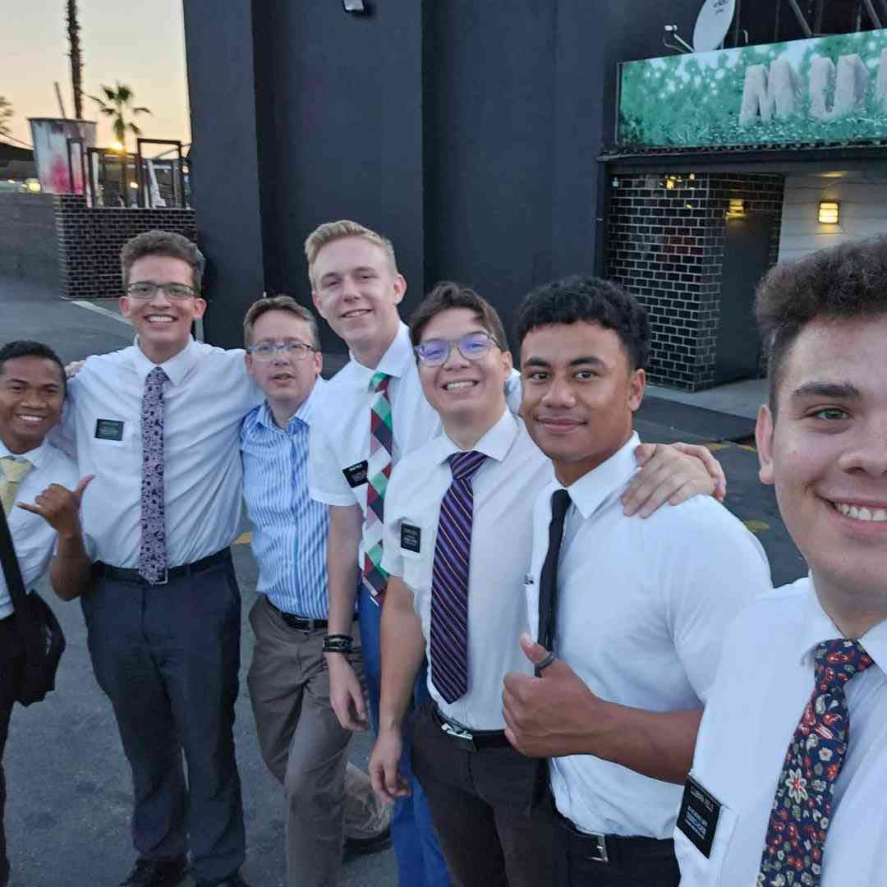

I am currently studying computer programming and web design through BYU, I am also learning skills in project management and SAP ERP. I come from South Africa, I've moved between Gauteng and KZN a couple of times. I love programming, reading, gaming and hanging out with my friends and family
About Me
My time as a missionary

I spent my time as a full time missionary mostly in the Pretoria mission, but I had started in the Johannesburg mission. It was a great experience that taught me a lot about leadership, responsibility, social skills, and coming closer to Jesus Christ.